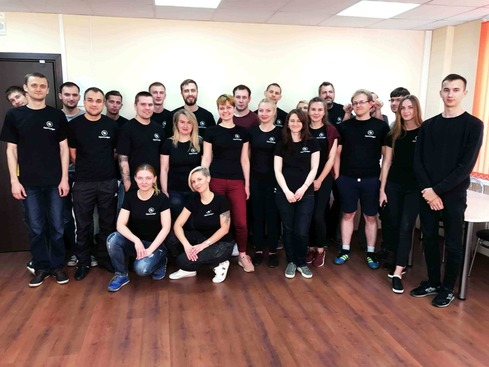

◄
✘
►

Сардэчна запрашаем!
« Былі дні, калі ўсе ночы напралёт я займаўся пошукам багаў ...
Мая кароткая біяграфія
АСНОЎНЫЯ ФАКТЫ ПРА МЯНЕ
Калі вы абмежаваныя па часе, можаце прачытаць толькі гэты модуль. У ім маецца самая асноўная інфармацыя і без лірыкі ☺
АСНОЎНЫЯ ФАКТЫ ПРА МЯНЕ
- Дата нараджэння: 14.02.92
- Адукацыя: МКП, ЕГУ
- 2018-2019 Праца ў ААТ "Аетсофт"
- 2019-2020 Праца ў ТАА "ПіксельПлекс"
- Агульны стаж працы QA - 2 гады
- Перавагі: Тэставанне вэб / дэсктоп
- Досвед працы з папулярнымі туламі
- Мінорныя багі магу фіксавать сам)
- Вопыт правядзення курсаў для Junior QA
- Гатовы арганізаваць QA курсы ў вас
- Не таксічны і не дэматывую каманду)
- Самастойна мяняю ваду ў кулеры
- Жаданая з п: 1200
Ну нічога сабе!
Калі вы чытаеце гэты тэкст, то хачу вас павіншаваць, вы дайшлі ўжо вельмі далёка, так як па статыстыцы гэты тэкст не чытаюць больш 99% чалавек. З гэтага можна зрабіць выснову, што вы ставіцеся менавіта да таго аднаго адсотку людзей, якія падыходзяць да сваёй справы адказна і транспарэнтна. На вашым месцы, я б зрабіў абсалютна гэтак жа.
Характар
Мне падабаецца знаёміцца з новымі людзьмі, але гэта не значыць што я які-небудзь прыставучы майстар знаёмстваў і прыстаю да кожнага сустрэчнага. Зусім нет. Па характары я не канфліктны, таму аддаю перавагу такому жа калектыву. Калі ў офісе пастаянна ідуць брудныя абмеркавання сваіх калегаў, а калектыў дзеліцца на два, тры, чатыры варагуючых лагера, які жыве па паняццях, а жыццё ў офісе пачынае нагадваць месца не гэтак аддаленыя, то мой баявы дух рэзка спадзе на нішто.
Люблю наведваць розныя курсы і трэнінгі. Мне здаецца, што кожны чалавек павінен пастаянна развівацца не толькі фізічна, але і інтэлектуальна, у дваццаць першым стагоддзі, часу інфармацыйных тэхналогій, у першую чаргу цэняцца не фізічныя здольнасці, а інтэлектуальныя. Бо я маю КМС па цяжкай атлетыцы, то з упэўненасцю магу заявіць, што інтэлектуальная праца нашмат складаней фізічнага, хоць яго вынік бывае не так прыкметны.
Падарожжа
У вольны ад працы час Я аддаю перавагу падарожнічаць, на мой погляд падарожжа-гэта падабенства цікавай кнігі, у якую акунаешся ў рэальным свеце і падарожнічаючы зноў і зноў, ты адкрываеш зусім іншую для сябе гісторыю, са сваімі прыгодамі і адкрыццямі. За 2016 год я паспеў пабываць у 10 гарадах Еўропы, прайсціся па беразе Індыйскага акіяна і паплаваць з дэльфінамі ў Чырвоным моры.
Кнігі, якія прачытаў за апошнія 3 месяцы:
1984, Джордж Оруэлл
451 градус па Фарэнгейце, Рэй Брэдберы
Вядзьмак «Апошняе жаданне», «Меч прызначаных» «Кроў эльфаў»
Уладар кольца "Братэрства кальца", " Дзве крэпасці»
Дабрачыннасць
Мне падабаецца дапамагаць бяздомным жывёлам. Даволі часта ўдзельнічаю ў розных падобных мерапрыемствах. Адно з самых запамінальных дабрачынных мерапрыемстваў было "Wroom Wroom X-MAS 2" у падтрымку бяздомных жывёл. У той дзень, у касцюме дыназаўра, я хадзіў па гандлёвым цэнтры, збіраючы добраахвотныя ахвяраванні для бяздомных жывёл. Сам касцюм абсталяваны відэакамерай і астуджэннем, але тым не менш вага касцюма складае 45 кілаграм, а тэмпература ўнутры дасягае 40 градусаў, таму без падрыхтоўкі кіраваць ім практычна немагчыма. На шчасце, у мяне быў вопыт кіравання і тэставання дадзенага касцюма, дзякуючы кампаніі Аетсофт, якая ўласна і падала дадзены касцюм для мерапрыемства
Курс тэставання па для пачаткоўцаў
Ідэя правядзення курсаў паўстала цалкам выпадкова, на кухні кампаніі Pixelplex) у нашага HR, Дар'і Жураўскай, я пацікавіўся, ці цікавая была ідэя стварыць курсы тэставання ПА для кампаніі? Бо падчас правядзення курсаў у выйгрышы аказваюцца ўсе, як студэнты, так выкладчык і кампанія. Перавагі выкладчыка ў тым, што ён атрымлівае каштоўны вопыт ментарства малодшых супрацоўнікаў і паўтарае ўжо месцамі прызабытую тэорыю. Для навучэнцаў перавагай з'яўляецца магчымасць атрымання першага месца працы і атрыманне базавых ведаў у галіне тэставання, а кампанія гарантавана атрымае найбольш матываваных і зацікаўленых Джуніара-супрацоўнікаў, якія ўжо пазнаёміліся з кампаніяй за час правядзення курсаў. Да майго здзіўлення на наступны дзень быў арганізаваны мітынг з нагоды правядзення курсаў, дзе абмеркавалі мэты і задачы, а затым было прынята рашэнне арганізаваць набор на курсы. У выніку заканчэння курсаў прапановы аб працы атрымалі два джуніёр-тэсціроўшчыка.
Аднымі з галоўных задач пры правядзенні курсаў было мінімізаваць стрэсавыя сітуацыі і канкурэнцыю паміж студэнтамі, а таксама стварыць максімальную ўзаемадапамогу і камандную працу. Падчас заняткаў было мноства розных прызавых конкурсаў, у выніку якіх нават сумнае навучанне праходзіла весела і азартна. Прыкладам аднаго з конкурсных заняткаў з'яўляецца спаборніцтва па хуткасным тэставанні, само заданне можна паглядзець па спасылцы
Самі ж заданні выконваліся з нуля, адпавядалі пройдзенаму матэрыялу. Заданні мелі выгляд своеасаблівых трэніровачных пакояў з штучна створанымі багамі. Падчас занятку ўсе багі разбіраліся і абмяркоўваліся. Вось некаторыя прыклады трэніровачных пакояў:
Першаснае тэставае заданне пры адборы кандыдатаў

Разбіраем і збіраем кампутар на час:)

Проста працоўныя будні

Узнагароджанне ўсіх удзельнікаў падрыхтоўчых курсаў

Агульная фатаграфія
Проста працоўныя будні
Аетсофт
Aetsoft спецыялізуецца на распрацоўцы і развіцці міжнародных Fintech-праектаў на блокчэйне, мабільных гульняў, вэб-праектаў з выкарыстаннем высоканагружаных сістэм. спецыялізуецца на наступных напрамках: Blockchain, AI & Machine Learning, Computer Vision, IoT, AR / VR / Mixed Reality.
Прапрацаваў у кампаніі паўтара года. Шмат добрых уражанняў. Першапачаткова ў гэтай кампаніі я быў кантэнт-мэнэджэрам і мінімальна вярстаў сайты, але потым з'явіўся досыць сур'ёзны праект, на які быў неабходны QA. Мне прапанавалі паспрабаваць дадзеную прафесію, у выніку чаго я пагадзіўся. Мы дамовіліся аб тым, што два месяцы я вучу асновы тэставання і распрацоўкі, а затым каманда распрацоўшчыкаў праводзіць сумоўе, па выніках якога мне прапанавалі б застацца ці разысціся. За два месяцы падрыхтоўкі Я прачытаў асноўныя кнігі па тэставанні, вывучыў найбольш актуальныя інструменты і паспяхова прайшоў сумоўе. Вось з гэтага моманту пачаўся мой шлях QA. У кампаніі былі пераважна блокчейн праекты і тэставанне грунтавалася на іх. Па большай частцы тэставаў API сэрвісы і фронтенд, ну і даводзілася фіксаваць некаторыя мінорных багі, якія тычацца вёрсткі.
ПіксельПлекс
Адна з вядучых у свеце кампаній па блокчэйн распрацоўцы. У партфоліо маецца больш 50 рэалізаваных праектаў, сярод якіх не толькі блокчэйн рашэння, але і мабільныя гульні, прыкладання віртуальнай рэальнасці, інтэрнэт-крамы і г. д

Пасля таго, як прыйшоў у кампанію PixelPlex, я па-сапраўднаму даведаўся што такое ІТ-дзвіжуха: вялікая колькасць праектаў, дзе ў кожнага свая метадалогія, штодзённыя мітынгі, спрынты, велізарныя аб'ёмы дакументацыі, недахоп часу і праўкі ад заказчыкаў. Бывалі перыяды, што за адзін тыдзень неабходна пратэставаць 7 і больш праектаў, гэта было дастаткова цяжка, але вельмі цікава, у такім рэжыме я навучыўся найбольш дакладна ацэньваць час на тэсты і падыходзіць да тэставання аптымізавана. У такія напружаныя часы вопыт узрастаў шматкроць. Праекты былі самі разнастайнымі, ад мабільных гульняў, да інтэрнэт-крам і блокчейн рашэнняў
Хобі і вольны час.
Тыя дарогі, якімі мы ходзім з дня ў дзень, становяцца аўтаматычнымі. Мы механічна спяшаемся па справах, думаючы пра нешта сваё, не заўважаючы ні пейзажу, ні прыгажосці, ні людзей вакол, у такія моманты нічога не хочацца рабіць, а проста сядзець дома і гуляць у Xbox, або пачытаць кнігу. У гэтым няма нічога дрэннага і страшнага, калі мы хоць часам ўносім нейкае разнастайнасць. Менавіта разнастайнасць спрыяе матывацыі, генерацыі новых думак, і дасягненню мэтаў. Па магчымасці я стараюся рабіць так, каб кожны дзень прыносіў нешта новае: магу змяніць маршрут на працу, купіць нейкі незвычайны вячэру ў краме. У больш глабальных рэчах, я магу навучыцца чаму-то новаму, прайсці онлайн-курсы, скокнуць з парашутам або адправіцца куды-небудзь у паход. У адзін з такіх момантаў я прайшоў курсы паляўнічага, дзе здаў экзамен і атрымаў ліцэнзію і дазвол на паляванне, але такім ні разу і не скарыстаўся:)
Першы скачок з парашутам

Скачок з парашутам маімі вачыма)

Велакарнавал "Viva Ровар". Мінск

Асвойваю кіраванне катэрам

эксперыменты з робататэхнікай (Raspberry Pi 4)

QA мітап ў ПВТ. Мінск


Матацыклы
Знаёмства з матацыклам было ў 14 гадоў, калі я на першыя заробленыя грошы купіў матацыкл Менск, які практычна не ехаў. У гаражы ў майго таварыша я цэлымі днямі сядзеў і вывучаў прынцып дзеяння рухавіка, якім чынам ён уладкаваны, чаму матацыкл не едзе і што для гэтага трэба зрабіць, каб ён пачаў нармальна ездзіць. Прайшло ўжо 14 гадоў з гэтага знаёмства, а гэты інтарэс нікуды не знік. За гэты час я памяняў ужо 6 матацыклаў і на дадзены момант уладальнік матацыкла Honda Shadow на якім я люблю ездзіць у далёкія паездкі, у тым ліку і ў Еўропу, дарэчы, адну з паездак апублікаваў Onliner.by .
Дзякуй за ўвагу!
Як абвяшчае прыказка " не апішаш у гэтай былі ўсіх баёў, якія былі."Таму калі вы хацелі б пачуць працяг маіх гісторый, то можаце звязацца са мной па любым паказаным спосабе, які знаходзіцца ўнізе

Няма чаго на тестеров наракаць, калі код крывой.
Баг у агні не патоне ў вадзе і не згарыць...
Баг у білдзе ня ўтоіш...
Паабедаў, а баг бяды не ведаў
▲
НАВЕРХ
⬇ СПАМПАВАЦЬ РЭЗЮМЭ